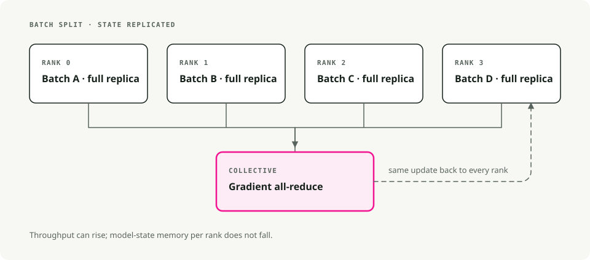
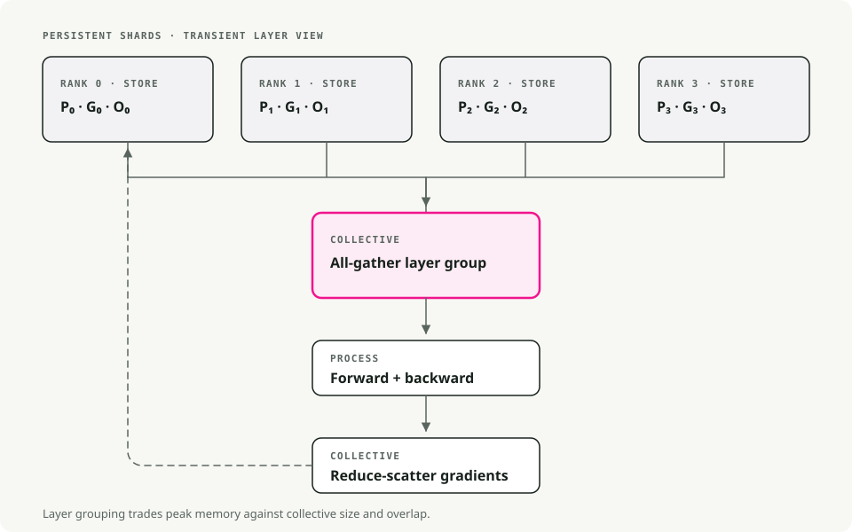
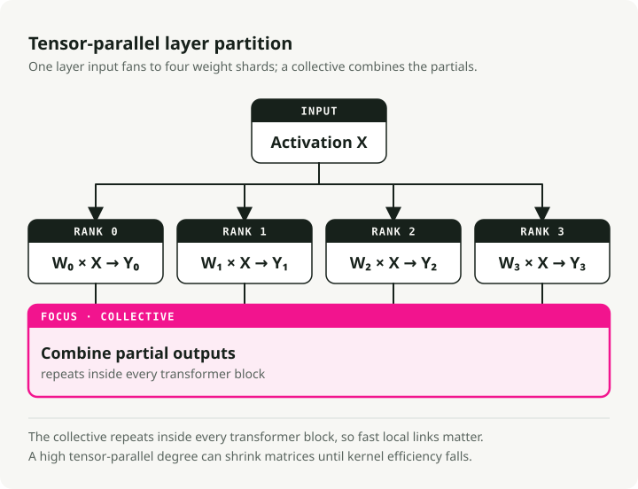
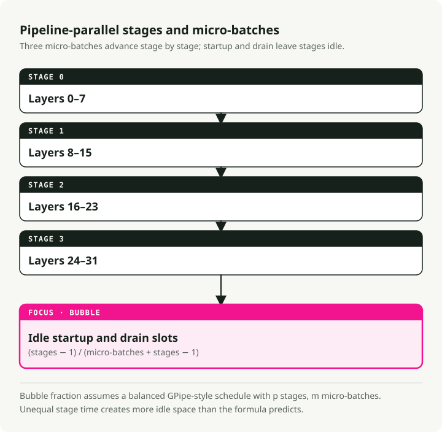
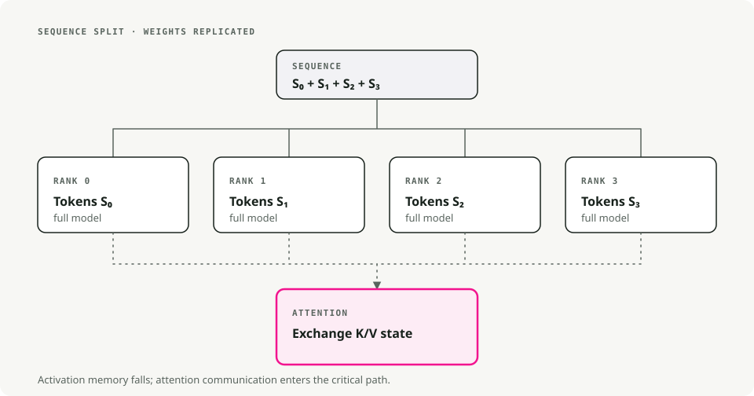
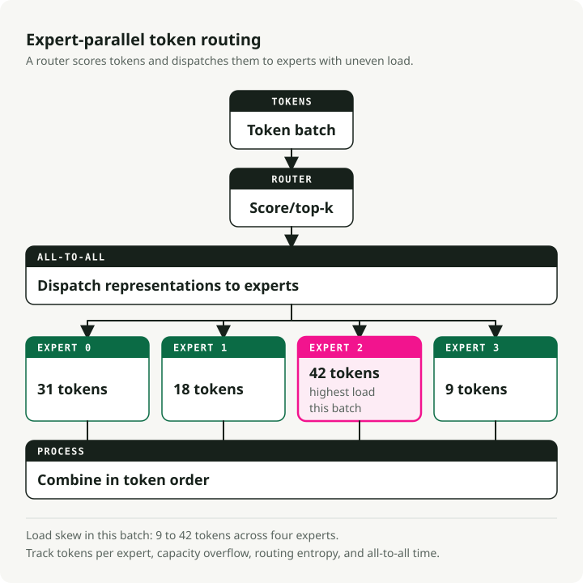
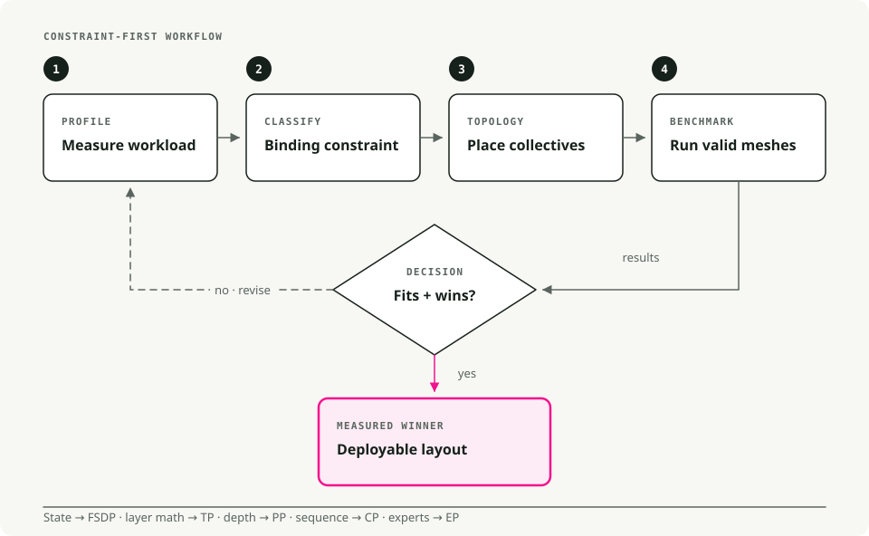

Scaling Large Language Models: Multi-GPU and Multi-Node Strategies That Hold Up in Practice
Today's LLMs don't fit on a single GPU. A 70B-parameter model needs about 140GB for weights alone in FP16, nearly twice what an A100 holds. Training or serving these models means splitting the work across multiple GPUs, and getting the split wrong wastes most of your compute budget.
This is a practical walk-through of the parallelism strategies that actually work in production, drawn from Hugging Face's Ultra-Scale Playbook.
TL;DR: Scaling LLMs is a memory, bandwidth, and communication problem before it is an algorithm problem. Start with data parallelism, move to FSDP/ZeRO when model states no longer fit, add tensor or pipeline parallelism when a single GPU cannot hold or execute the model efficiently, and use MoE only when the serving and routing complexity is justified.
Prerequisites
You'll get the most out of this if you're already comfortable with:
- Backpropagation, gradients, and optimizers like AdamW.
- Transformer mechanics: attention and feed-forward networks.
- PyTorch basics:
nn.Module,DataLoader, the standard training loop.
Why scaling matters
Four things push you off a single GPU. A 70B model needs roughly 140GB in FP16, almost double an A100's 80GB. Even on eight A100s, a 13B from-scratch run takes weeks. Long contexts (32K tokens and up) blow past single-GPU memory before you've done any real work. And at production load, distributed inference is what keeps tail latency from running away on you.
1. Parallelism techniques, explained simply
1.1 Data parallelism (DP)
The simplest split. Every GPU holds the full model and processes a different slice of the batch. After backprop, the GPUs all-reduce their gradients (averaging), then each updates its own copy. Identical models, different data, synchronized weights.
Reach for it when the model fits comfortably on one GPU and you just want to chew through more batches per second. Setup cost is near zero; DDP in PyTorch is a one-line wrapper. The catch is memory: every GPU still holds the full model, optimizer states, and gradients, so you're buying throughput, not capacity.

Tools: PyTorch DDP, Horovod.
1.2 Fully sharded data parallelism (FSDP)
DP, but memory-aware. Parameters, gradients, and optimizer states are sharded across GPUs. During the forward pass, each GPU gathers the parameters it needs from the others, computes, then drops the borrowed shards to free memory. Backward pass repeats the gather, then reduces gradients so each GPU only updates its own shard.
This is the layer to reach for once the model has outgrown a single GPU (typically anything past ~10B parameters) and you want to keep training on a single machine without rewriting your code. In practice FSDP lets you train models 4–8× larger than what fits on one GPU.

[!NOTE] ZeRO stages, briefly FSDP is often described in ZeRO terms (Zero Redundancy Optimizer):
- Stage 1: shard optimizer states only (~4× memory savings).
- Stage 2: shard gradients + optimizer states (~8× memory savings).
- Stage 3: shard parameters + gradients + optimizer states (linear scaling with N GPUs).
PyTorch FSDP defaults to Stage 3 behavior.
Enabling FSDP in PyTorch
from torch.distributed.fsdp import FullyShardedDataParallel as FSDP
# 1. Wrap your model
model = MyLLM()
model = FSDP(model)
# 2. Train as usual
output = model(input)
loss = output.sum()
loss.backward()
optimizer.step()
Tools: PyTorch FSDP, DeepSpeed ZeRO-3.
1.3 Tensor parallelism (TP)
Split individual layers across GPUs. Take a weight matrix, chunk it column-wise (or row-wise), and give each GPU a chunk. Each device computes its piece of the output; an all-reduce or concatenation stitches the results back together before the next layer. This happens at every layer.
TP earns its keep when individual layers are too large even after FSDP — huge attention matrices or wide FFNs. It also assumes fast intra-node interconnect: NVLink or NVSwitch, not PCIe. Across nodes, the per-layer all-reduce becomes the bottleneck and the win disappears. TP degree of 2–8 inside a single machine is the typical sweet spot.

Tools: Megatron-LM, TensorRT-LLM, ColossalAI.
1.4 Pipeline parallelism (PP)
Split the model vertically, by layer groups. Layers 1–10 live on GPU 1, layers 11–20 on GPU 2, and so on. Then send micro-batches through the pipeline so every stage stays busy: GPU 1 finishes batch 1 and hands it to GPU 2, then immediately starts on batch 2. With enough micro-batches in flight, every device is doing work on something.
Reach for PP when the model is so deep that even FSDP can't fit it, or when you need to span nodes and inter-node bandwidth is the limiting factor. The annoying part is pipeline "bubbles" — idle stages at the head and tail of each batch — which you minimize by running many small micro-batches instead of a few big ones.

Tools: DeepSpeed PP, Megatron-LM, GPipe.
1.5 Context parallelism (CP)
For very long sequences. Split a 64K-token context across, say, four GPUs (16K tokens each). Each GPU runs self-attention on its local chunk, then GPUs exchange keys and values to compute the cross-chunk attention pieces. The merged result is what you'd get from running the full context on one device, without the memory bill.
This is the lever you pull when context length, not model size, is the bottleneck: long-document analysis, book-length reasoning, code generation over a large repo. CP is what makes 100K+ token training feasible on hardware that would otherwise top out at 8K.

1.6 Expert parallelism (Mixture of Experts)
Specialization. Replace dense FFN layers with N expert sub-networks (8, 64, sometimes more). A small gating network picks the top-k experts (usually top-2) for each token. Only those experts run for that token; the rest sit idle. Different experts can live on different GPUs, so the model can be huge in total parameters while per-token compute stays small.
Mixtral-8x7B has 56B total parameters but only ~13B active per token; Grok and DeepSeek-V2 use the same trick. The price is training-side complexity: load balancing between experts is its own engineering problem, and routing instability has caused more than one MoE run to diverge.

Quick comparison: which parallelism should you use?
| Technique | What it splits | Best for | Memory savings | Communication cost |
|---|---|---|---|---|
| Data Parallelism (DP) | Data batches | Models that fit on 1 GPU | None (copies model) | Low (only gradients) |
| FSDP | Model + optimizer + gradients | Models too big for 1 GPU | High (4–8×) | Medium |
| Tensor Parallelism (TP) | Individual layers | Huge layers, fast GPUs | Medium | High (per layer) |
| Pipeline Parallelism (PP) | Layer groups (stages) | Very deep models | Medium | Low (between stages) |
| Context Parallelism (CP) | Sequence length | Long contexts (64K+ tokens) | High (for activations) | Medium |
| Expert Parallelism (MoE) | Experts in MoE layers | Massive sparse models | None (more params, less FLOPs) | Medium |
A reasonable default: start with FSDP. Add TP when individual layers are still too big. Add PP when you need to span multiple nodes. Add CP when context length is the bottleneck.
2. Practical training strategies
Different hardware shapes call for different combinations. Here's what I'd actually do in three common ones.
2.1 Single machine, 2–8 GPUs
Use pure FSDP first — PyTorch FSDP or DeepSpeed ZeRO-2/ZeRO-3 — driven by Hugging Face accelerate or torchrun. If individual attention or FFN layers are still too large after sharding, layer in TP=2.
A few hardware-specific notes. Consumer GPUs (RTX 4090 and similar) on PCIe should stick to TP=1 or TP=2 max; the interconnect can't keep up with anything more. Server GPUs (A100, H100) with NVLink handle TP=2 to TP=4 fine. And on eight GPUs in a single box, pure FSDP often handles models up to 70B without needing TP at all.
2.2 Small cluster, 2–16 nodes (≤128 GPUs)
You want 2D or 3D parallelism: TP plus FSDP, optionally plus PP. The shape that works in practice:
- TP within each node (TP=4 or TP=8 with NVLink).
- FSDP across nodes for data parallelism.
- Add PP if the model is so deep that even FSDP can't fit it, splitting it vertically across nodes.
The reason this layout works: NVLink is fast enough to handle TP's per-layer chatter, while InfiniBand between nodes only has to sync FSDP shards, which is much cheaper communication. Net effect: you minimize cross-node bandwidth, which is almost always the bottleneck at this scale.
When you do add PP, set the micro-batch count to at least 4× the pipeline degree. Fewer than that and the bubbles eat your throughput.
2.3 Large cluster (hundreds to thousands of GPUs)
This is where 4D parallelism (DP × TP × PP × CP) starts to make sense. Map each dimension to your hardware topology, and use Megatron-LM or Nanotron — they support 4D out of the box, and rolling your own is a project.
Realistically, you only need this when you're pretraining 70B+ models with 32K+ context windows from scratch. Most fine-tuning, even of large models, doesn't.
A concrete example. Training a 70B model with 32K context on 512 GPUs:
- TP=8 within each 8-GPU node.
- PP=4 across four nodes.
- CP=4 for the long context.
- DP=4 for throughput.
- 8 × 4 × 4 × 4 = 512 GPUs.
Scaling efficiency on a setup like this lands around 70–80% with good InfiniBand, and you can push to ~85% with careful tuning. Anything below that and you're leaving real money on the table.
3. Tools worth learning
A short cheat sheet for picking the right one:
| Tool | When to use | Learning curve | Best for |
|---|---|---|---|
| Hugging Face Accelerate | Any distributed training with minimal code changes | ★☆☆☆☆ | Beginners, quick prototypes |
| PyTorch FSDP | Medium-to-large models (1–30B) on a single node | ★★☆☆☆ | The common case |
| DeepSpeed ZeRO | Multi-node training with good documentation | ★★★☆☆ | Production training |
| Megatron-LM | Very large models (70B+), 3D/4D parallelism | ★★★★☆ | Production at scale |
| Nanotron | Learning and research on modern parallelism | ★★★☆☆ | Education, experimentation |
| vLLM | Fast inference with PagedAttention and KV caching | ★★☆☆☆ | Serving in production |
| TensorRT-LLM | Maximum inference speed on NVIDIA GPUs | ★★★★☆ | Production inference optimization |
A minimal accelerate FSDP config
compute_environment: LOCAL_MACHINE
distributed_type: FSDP
fsdp_config:
fsdp_auto_wrap_policy: TRANSFORMER_BASED_WRAP
fsdp_backward_prefetch: BACKWARD_PRE
fsdp_state_dict_type: SHARDED_STATE_DICT
machine_rank: 0
main_process_ip: null
main_process_port: null
main_training_function: main
mixed_precision: bf16
num_machines: 1
num_processes: 8
use_cpu: false
If you're starting out, I'd reach for Hugging Face Accelerate to get something running, then drop down to PyTorch FSDP or DeepSpeed once you need finer control.
4. A decision framework

The picture above mirrors what I'd do in practice: FSDP first, TP when layers are too big, PP for multi-node depth, CP for long context. Add complexity only after the simpler approach has actually run out of room.
5. The Ultra-Scale cheat sheet
Hugging Face's team put together a single-page visual summary that covers most of what's above:

Conclusion
FSDP handles most of what you'll run into. TP fits inside a node when individual layers still won't fit. PP spreads the model across nodes when depth is the constraint. CP comes in when context length is what's running you out of memory. The principle that holds across all of them is to match the parallelism strategy to the hardware topology you actually have, and to add a new dimension only once the simpler one has run out.
Further reading:
- Hugging Face Ultra-Scale Playbook — the interactive guide this post draws on.
- PyTorch FSDP Tutorial — the official getting-started guide.
- DeepSpeed Tutorials — full DeepSpeed documentation.
Key Takeaways
- Data parallelism is the simplest baseline, but it replicates model state on every GPU.
- FSDP and ZeRO reduce memory pressure by sharding parameters, gradients, and optimizer state.
- Tensor and pipeline parallelism solve different bottlenecks: layer math versus layer placement.
- Context parallelism matters when sequence length, not parameter count, becomes the limiting factor.
- Mixture-of-Experts improves active compute per token, but makes routing, load balancing, and serving harder.
References
- PyTorch FSDP documentation - fully sharded data parallel training.
- DeepSpeed ZeRO paper - optimizer and model-state partitioning.
- Megatron-LM paper - tensor model parallelism.
- GPipe paper - pipeline parallel training.
- Switch Transformers paper - sparse expert models.